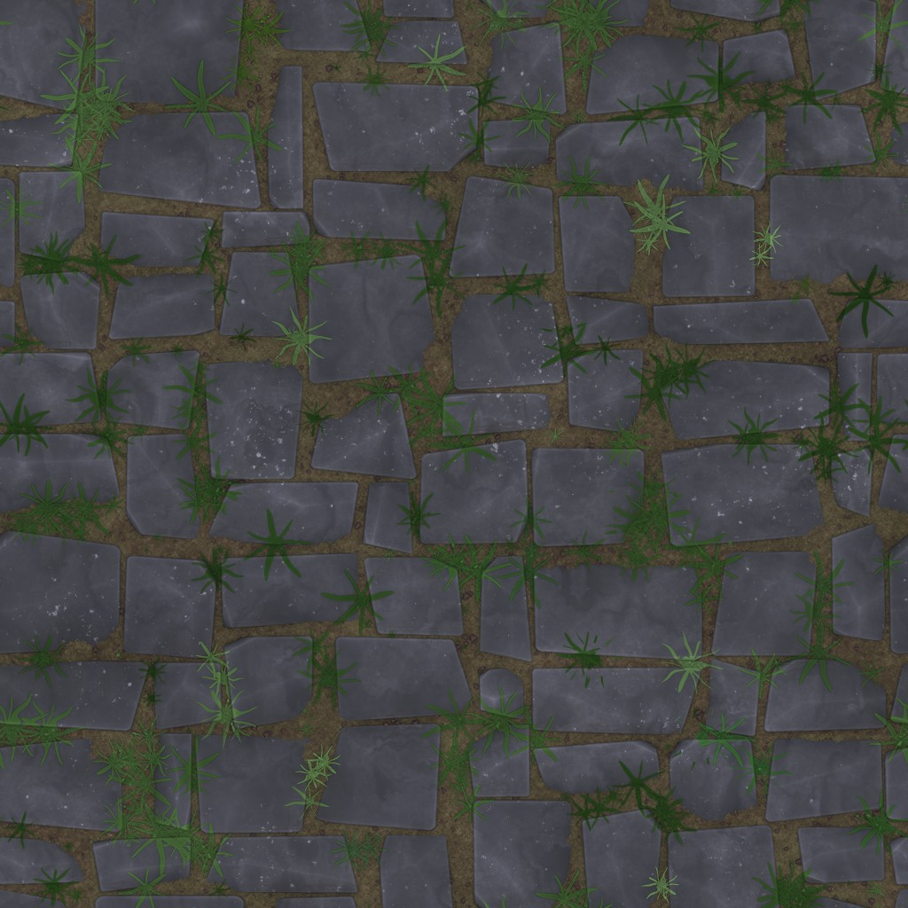
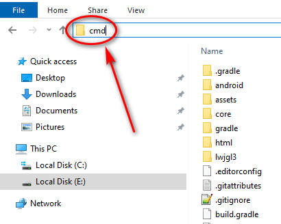
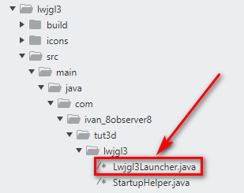
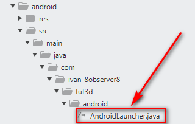
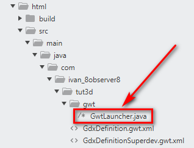

Some notes about Tutorial on creating a 3D game with LibGDX. I use Sublime Text 4 and CMD. This is good for badget laptops.
start "" "E:\Program Files (installed)\Libgdx Tools\gdx-liftoff-1.12.1.8.jar"
I prefer HTML/GWT instead of HTML/TeaVM. Because:
Main.java
package com.ivan_8observer8.tut3d;
import com.badlogic.gdx.Game;
/** {@link com.badlogic.gdx.ApplicationListener} implementation shared by all platforms. */
public class Main extends Game {
@Override
public void create() {
setScreen(new GameScreen());
}
}
package com.ivan_8observer8.tut3d;
import com.badlogic.gdx.Gdx;
import com.badlogic.gdx.ScreenAdapter;
import com.badlogic.gdx.graphics.Color;
import com.badlogic.gdx.graphics.Texture;
import com.badlogic.gdx.graphics.VertexAttributes;
import com.badlogic.gdx.graphics.g2d.TextureRegion;
import com.badlogic.gdx.graphics.g3d.*;
import com.badlogic.gdx.graphics.g3d.attributes.ColorAttribute;
import com.badlogic.gdx.graphics.g3d.attributes.TextureAttribute;
import com.badlogic.gdx.graphics.g3d.environment.DirectionalLight;
import com.badlogic.gdx.graphics.g3d.utils.CameraInputController;
import com.badlogic.gdx.graphics.PerspectiveCamera;
import com.badlogic.gdx.graphics.g3d.utils.ModelBuilder;
import com.badlogic.gdx.utils.Array;
import com.badlogic.gdx.utils.ScreenUtils;
/** First screen of the application. Displayed after the application is created. */
public class GameScreen extends ScreenAdapter {
public final Color BACKGROUND_COLOUR = new Color(153f/255f, 220f/255f, 236f/255f, 1.0f);
private PerspectiveCamera cam;
private CameraInputController camController;
private Environment environment;
private Model modelGround;
private Texture textureGround;
private Array<ModelInstance> instances;
private ModelBatch modelBatch;
@Override
public void show() {
// Prepare your screen here.
cam = new PerspectiveCamera(67, Gdx.graphics.getWidth(), Gdx.graphics.getHeight());
cam.position.set(10f, 1.5f, 5f);
cam.lookAt(0,0,0);
cam.near = 1f;
cam.far = 300f;
cam.update();
camController = new CameraInputController(cam);
Gdx.input.setInputProcessor(camController);
environment = new Environment();
environment.set(new ColorAttribute(ColorAttribute.AmbientLight, 0.6f, 0.6f, 0.6f, 1f));
environment.add(new DirectionalLight().set(0.8f, 0.8f, 0.8f, -1f, -0.8f, -0.2f));
String textureGroundPath = "textures/Stylized_Stone_Floor_005_basecolor.jpg";
textureGround = new Texture(Gdx.files.internal(textureGroundPath), true);
textureGround.setFilter(Texture.TextureFilter.MipMapLinearLinear, Texture.TextureFilter.Linear);
textureGround.setWrap(Texture.TextureWrap.Repeat, Texture.TextureWrap.Repeat);
TextureRegion textureRegion = new TextureRegion(textureGround);
int repeats = 10;
textureRegion.setRegion(0, 0, textureGround.getWidth() * repeats,
textureGround.getHeight() * repeats);
ModelBuilder modelBuilder = new ModelBuilder();
// create model
modelGround = modelBuilder.createBox(100f, 1f, 100f,
new Material(TextureAttribute.createDiffuse(textureRegion)),
VertexAttributes.Usage.Position | VertexAttributes.Usage.Normal |
VertexAttributes.Usage.TextureCoordinates);
// create and position model instances
instances = new Array<>();
instances.add(new ModelInstance(modelGround, 0, -1, 0)); // 'table top' surface
modelBatch = new ModelBatch();
}
@Override
public void render(float delta) {
// Draw your screen here. "delta" is the time since last render in seconds.
// update
camController.update();
// render
ScreenUtils.clear(BACKGROUND_COLOUR, true);
modelBatch.begin(cam);
modelBatch.render(instances, environment);
modelBatch.end();
}
@Override
public void resize(int width, int height) {
// Resize your screen here. The parameters represent the new window size.
cam.viewportWidth = width;
cam.viewportHeight = height;
cam.update();
}
// @Override
// public void pause() {
// // Invoked when your application is paused.
// }
// @Override
// public void resume() {
// // Invoked when your application is resumed after pause.
// }
@Override
public void hide() {
// This method is called when another screen replaces this one.
dispose();
}
@Override
public void dispose() {
// Destroy screen's assets here.
modelBatch.dispose();
modelGround.dispose();
textureGround.dispose();
}
}
This is the "Stylized_Stone_Floor_005_basecolor.jpg" texture that should be in the "assets/textures" folder. RMB (right mouse button) click on the image below, choose "Save image as...", and save it to the "assets/textures" folder:
Open CMD or Far Manager. You can open cmd in the root folder of the project by typing cmd in text text field (and press Enter):
Desktop:
Android:
HTML/GWT:
LWJGL3 : configuration.setBackBufferConfig(8, 8, 8, 8, 16, 0, 2);
LWJGL2 : configuration.samples = 2;
GWT : configuration.antialiasing = true;
Android: configuration.numSamples = 2;
iOS : configuration.multisample = GLKViewDrawableMultisample._4X;
Add the configuration above the the files:
Desktop:
Android:
HTML/GWT:
Note. You can see what the parameters of the "setBackBufferConfig()" method mean in the Lwjgl3ApplicationConfiguration.java#L159 file in the documentation:
/** Sets the bit depth of the color, depth and stencil buffer as well as multi-sampling.
*
* @param r red bits (default 8)
* @param g green bits (default 8)
* @param b blue bits (default 8)
* @param a alpha bits (default 8)
* @param depth depth bits (default 16)
* @param stencil stencil bits (default 0)
* @param samples MSAA samples (default 0) */
public void setBackBufferConfig (int r, int g, int b, int a, int depth, int stencil, int samples) {
this.r = r;
this.g = g;
this.b = b;
this.a = a;
this.depth = depth;
this.stencil = stencil;
this.samples = samples;
}
Click to see a result in the browser of the free Netlify hosting. You can rotate (LMB), zoom (MMB), and pan (RMB) the camera